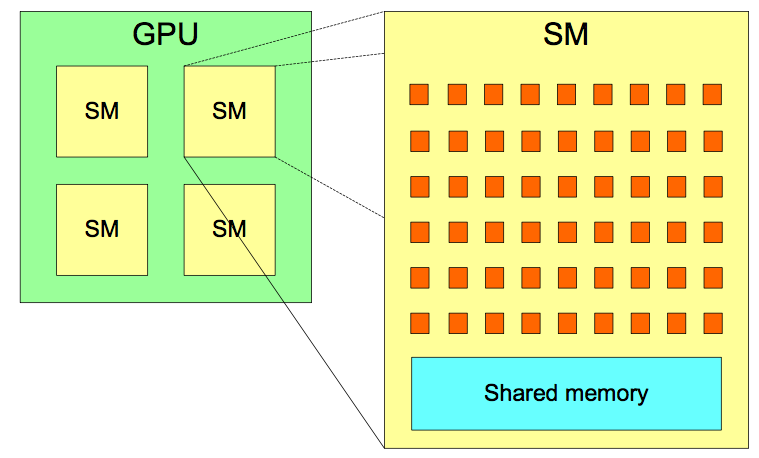

CUDA Programming
Kevin Stratford
kevin@epcc.ed.ac.uk
Material by: Alan Gray, Kevin Stratford
Overview
- Compute Unified Device Architecture
- Background
- CUDA blocks and threads
- Data management
Development
- Early graphics interfaces difficult to program
- Partcularly for scientific applications
- CUDA developed around 2007 to ease development
- C/C++ interface
- Host side interface to control GPU memory etc
- Kernels executed on the device by threads
- Extended to CUDA Fortran with appropriate compiler
Host and Device
- Separate memory / address spaces

Streaming Multiprocossers
- A two level hierarchy:
- Many streaming multiprocessors each with many cores
- Exact numbers depend on particular hardware
Grids, Blocks, and Threads
- Reflected in programming model
- Problem abstracted to blocks (map to SMs)
- Each block contains a number of threads (map to cores)
- Don't care about details of mapping to hardware
- Just describe a grid of blocks a threads
- Hardware will schedule work as it sees fit
dim3 structure
-
CUDA introduces a container for x,y,z dimensions
- C:
- Fortran:
struct {
unsigned int x;
unsigned int y;
unsigned int z;
};
type :: dim3
integer :: x
integer :: y
integer :: z
end type dim3
Example
/* Consider the one-dimensional loop: */
for (int i = 0; i < LOOP_LENGTH; i++) {
result[i] = 2*i;
}
CUDA C Kernel Function
__global__ void myKernel(int * result) {
int i;
i = threadIdx.x;
result[i] = 2*i;
}
Executing a kernel
/* Kernel is launched by on the host by specifying
* Number of blocks (sometimes "blocksPerGrid")
* Number of threads per block */
dim3 blocks;
dim3 threadsPerBlock;
blocks.x = 1;
threadsPerBlock.x = LOOP_LENGTH;
myKernel <<< blocks, threadsPerBlock >>> (result);
- Referred to as the execution configuration
CUDA Fortran
! In Fortran an analogous kernel is...
attributes(global) subroutine myKernel(result)
integer, dimension(:) :: result
integer :: i
i = threadIdx%x
result(i) = 2*i
end subroutine myKernel
! ... with execution ...
blocks%x = 1
threadsPerBlock%x = LOOP_LENGTH
call myKernel <<< blocks, threadsPerBlock >>> (result)
More than one block
/* One block only uses one SM; use of resources is very poor.
* Usually want large arrays using many blocks. */
__global__ void myKernel(int * result) {
int i = blockIdx.x*blockDim.x + threadIdx.x;
result[i] = 2*i;
}
/* ... with execution ... */
block.x = NBLOCKS;
threadsPerBlock.x = LOOP_LENGTH/NBLOCKS;
myKernel <<< blocks, threadsPerBlock >>> (result);
More then one block: Fortran
attributes(global) subroutine myKernel(result)
integer, dimension(:) :: result
integer :: i
i = (blockIdx%x - 1)*blockDim%x + threadIdx%x
result(i) = 2*i
end subroutine myKernel
! ... with execution ...
blocks%x = NBLOCKS
threadsPerBlock%x = LOOP_LENGTH/NBLOCKS
call myKernel <<< blocks, threadsPerBlock >>> (result)
Internal variables: C
- All provided by the implementation:
- Fixed at kernel invocation:
dim3 gridDim; /* Number of blocks */
dim3 blockDim; /* Number of threads per block */
- Unique to each block:
dim3 blockIdx; /* 0 <= blockIdx.x < gridDim.x etc */
- Unique to each thread:
dim3 threadIdx; /* 0 <= threadIdx.x < blockDim.x etc */
Internal variables: Fortran
- Again provided by the implementation:
- Fixed at kernel invocation:
type (dim3) :: gridDim ! Number of blocks
type (dim3) :: blockDim ! Number of threads per block
- Unique to each block:
type (dim3) :: blockIdx ! 1 <= blockIdx%x <= gridDim%x etc
- Unique to each thread:
type (dim3) :: threadIdx ! 1 <= threadIdx%x <= blockDim%x etc
Two-dimensional example
__global__ void matrix2d(float a[N][N], float b[N][N],
float c[N][N]) {
int j = blockIdx.x*blockDim.x + threadIdx.x;
int i = blockIdx.y*blockDim.y + threadIdx.y;
c[i][j] = a[i][j] + b[i][j];
}
/* ... with execution, e.g., ... */
dim3 blocksPerGrid(N/16, N/16, 1);
dim3 threadsPerBlock(16, 16, 1);
matrix2d <<< blocksPerGrid, threadsPerBlock >>> (a, b, c);
Synchronisation between host and device
- Kernel launches are asynchronous
- Return immediately on the host
- Synchronisation required to ensure completion
- Errors can appear asynchronously!
myKernel <<<blocksPerGrid, threadsPerBlock>>> (...)
/* ... could perform independent work here ... */
err = cudaDeviceSynchronize();
/* ... now safe to obtain results of kernel ... */
- Many other CUDA operations have asynchronous analogues
-
cudaMemcpyAsync(), ...
Synchronisation on the device
- Synchronisation between threads in the same block is possible
- Allows co-ordination of action in shared memory
- Allows reductions
- Historically, not possible to synchronise between blocks
- Can only exit the kernel
- Synchronise on host and start another kernel
Memory Management
- Recall host and device have separate address spaces
- Data accessed by kernel must be in the device memory
- This is managed largely explicitly
Memory Allocation: C
- Allocation managed via standard C pointers
/* For example, provide an allocation of "nSize" floats
* in the device memory: */
float * data;
err = cudaMalloc(&data, nSize*sizeof(float));
...
err = cudaFree(data);
- Such pointers cannot be dereferenced on the host
Memory Movement: cudaMemcpy()
- Initiated on the host:
/* Copy host data values to device memory ... */
err = cudaMemcpy(dataDevice, dataHost, nSize*sizeof(float),
cudaMemcpyHostToDevice);
/* And back again ... */
err = cudaMemcpy(dataHost, dataDevice, nSize*sizeof(float),
cudaMemcpyDeviceToHost);
- API:
cudaError_t cudaMemcpy(void * dest, const void * src,
size_t count,
cudaMemcpyKind kind);
Memory allocation: CUDA Fortran
- Declare variable to be in the device memory space
- Via the
deviceattribute - Compiler then knows that the variable should be treated appropriately
- Via the
! Make an allocation in device memory:
real, device, allocatable :: dataDevice(:)
allocate(dataDevice(nSize), stat = ...)
...
deallocate(dataDevice)
- Or, can use the C-like API
-
cudaMalloc(),cudaFree()
Memory movement: CUDA Fortran
- May be performed via simple assignment
- Again, compiler knows what action to take via declarations
! Copy from host to device
dataDevice(:) = dataHost(:)
! ... and back again ...
dataHost(:) = dataDevice(:)
- Can be more explicit using C-like API
err = cudaMemcpy(dataDevice, dataHost, nSize,
cudaMemcpyHostToDevice)
Compilation
- CUDA C source
- File extension
.cuby convention - Compiled via NVIDIA
nvcc
$ nvcc -o example example.cu
- CUDA Fortran source
- File extension
.cufby convention - Compiled via Portland Group compiler
pgf90 - Use
-Mcuda(if file extension not.cuf)
$ pgf90 -Mcuda -o example example.cuf
Summary
- CUDA C and CUDA Fortran
- Provide API and extensions for programming NVIDIA GPUs
- Memory management
- Kernel execution
- CUDA emcompasses wide range of functionality
- Can make significant progress with a small subset
- Still evolving (along with hardware)
- Currently CUDA v9
- About one release per year
- Features can disapear / become outmoded